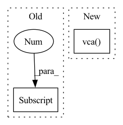

Pattern ID :33710

Before Change
lfo_2,
)
one_mod = torch.ones_like(modulation[0])
zero_mod = torch.zeros_like((modulation[0]))
// Create signal and with modulations and mix together
After Change
)
// Create signal and with modulations and mix together
vco_1_out = self.vca(self.vco_1(midi_f0, modulation[0]), modulation[1])
vco_2_out = self.vca(self.vco_2(midi_f0, modulation[2]), modulation[3])
noise_out = self.vca(self.noise(device=self.device), modulation[4])
return self.mixer(vco_1_out, vco_2_out, noise_out)
In pattern: SUPERPATTERN
Frequency: 3
Non-data size: 2
Instances
Fragment ID: 96934659
Project Name: turian/torchsynth
Commit Name: 15aa8d57d04dbad78025f4172618b12fb6403c76
Time: 2021-03-20
Author: jordieshier@gmail.com
File Name: torchsynth/synth.py
M Class Name: Voice
N Class Name: Voice
M Method Name: _forward(1)
N Method Name: _forward(1)
M Parent Class: AbstractSynth
N Parent Class: AbstractSynth
M File Name: torchsynth/synth.py
N File Name: torchsynth/synth.py
M Start Line: 177
M End Line: 193
N Start Line: 177
N End Line: 189
'>
Before Change
vco_2_out = self.vco_2(midi_f0, modulation[1]) * modulation[3]
audio_out = util.crossfade2D(vco_1_out, vco_2_out, self.vco_ratio.p("ratio"))
audio_out = self.noise(audio_out, modulation[4])
return self.vca(modulation[5], audio_out)
After Change
midi_f0, note_on_duration = self.keyboard()
// Compute LFOs with envelopes
lfo_1 = self.vca(self.lfo_1(), self.lfo_1_adsr(note_on_duration))
lfo_2 = self.vca(self.lfo_2(), self.lfo_2_adsr(note_on_duration))
// Mix all modulation signals
modulation = self.modulation_mixer(
'>
Fragment ID: 96934658
Project Name: turian/torchsynth
Commit Name: 923d34b8d75ad05f0117029213ff0cd12af2fc27
Time: 2021-03-20
Author: jordieshier@gmail.com
File Name: torchsynth/synth.py
M Class Name: Voice
N Class Name: Voice
M Method Name: _forward(1)
N Method Name: _forward(1)
M Parent Class: AbstractSynth
N Parent Class: AbstractSynth
M File Name: torchsynth/synth.py
N File Name: torchsynth/synth.py
M Start Line: 170
M End Line: 186
N Start Line: 170
N End Line: 186
'>
Before Change
// Create signal and with modulations and mix together
vco_1_out = self.vca(self.vco_1(midi_f0, modulation[0]), modulation[2])
vco_2_out = self.vca(self.vco_2(midi_f0, modulation[1]), modulation[3])
audio_out = util.crossfade2D(vco_1_out, vco_2_out, self.vco_ratio.p("ratio"))
noise = self.noise(device=self.device)
After Change
// Create signal and with modulations and mix together
vco_1_out = self.vca(self.vco_1(midi_f0, zero_mod), one_mod)
vco_2_out = self.vca(self.vco_2(midi_f0, zero_mod), one_mod)
noise_out = self.vca(self.noise(device=self.device), one_mod)
// return self.mixer(vco_1_out, vco_2_out, noise_out)
return vco_1_out
'>
Fragment ID: 96934656
Project Name: turian/torchsynth
Commit Name: 3ff27c4a0f83e7820b19f2a8c219e84ae56f91a5
Time: 2021-03-20
Author: jordieshier@gmail.com
File Name: torchsynth/synth.py
M Class Name: Voice
N Class Name: Voice
M Method Name: _forward(1)
N Method Name: _forward(1)
M Parent Class: AbstractSynth
N Parent Class: AbstractSynth
M File Name: torchsynth/synth.py
N File Name: torchsynth/synth.py
M Start Line: 174
M End Line: 187
N Start Line: 177
N End Line: 193